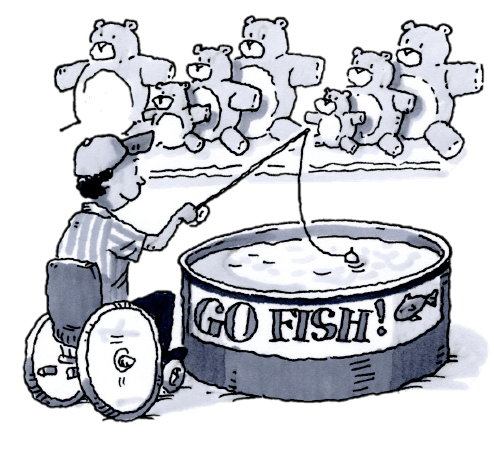
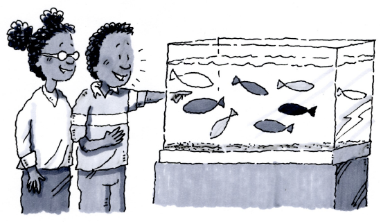
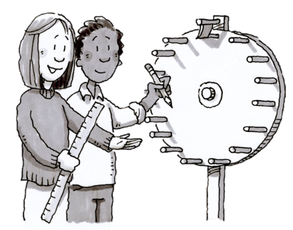
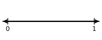
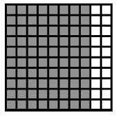
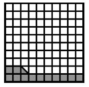
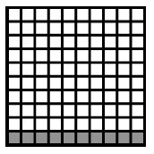
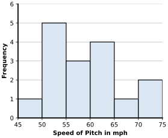

What are the chances?
Introduction to Probability
You have probably heard a weather forecaster say that the chance of rain tomorrow is . Have you thought about what that means? Does it mean that it will rain tomorrow for sure? What is the chance that it will not rain? In today’s lesson, you will investigate the chance, or the probability, of something happening or not happening. As you do the activities, ask your team these questions:
What is the probability of the event occurring?
How can we record that probability?
POSSIBLE OR IMPOSSIBLE?
With your team, make lists of three different types of events:
Events that you think are possible but not certain to happen,
Events that are certain to happen.
Events that would be impossible to happen.
Be ready to share your lists with the class. Then use your lists to complete the activities below.
Draw a line segment on your paper and label the left end “Impossible” and the right end “Certain.”
At the “Impossible” end, write the events that your team decided could not happen. How could you label the possibility of these events occurring with a percentage?
At the “Certain” end, write the events your team has decided are certain to happen. How could you label the possibility of these events occurring with a percentage?
Along the line, write the events that you thought were possible. Place them along the line in order from closer to impossible, somewhere in the middle, or closer to certain.
GO FISH

Mike wants to win a giant stuffed animal at the carnival. He decided to play the “Go Fish” game, which has three prizes: a giant stuffed animal, a smaller stuffed animal, and a plastic kazoo.
The game is set up with a tank containing green fish, blue fish, and yellow fish. To play, Mike must go fishing. The game is set up so that every time a player goes fishing, they will catch a fish. Simulate the game by creating a bag with tiles matching the fish colors using the 1-51 Student eTool  .
.
To win the giant stuffed animal, Mike needs to catch a green fish.
If all of the fish in the tank are green, how would you describe the probability of Mike’s winning a giant stuffed animal?
The way the tank is set up (with green, blue, and yellow fish), what are the chances that Mike will catch a black fish?
Given the information in the problem, what percent of the time would you expect Mike to catch a green fish and win the giant stuffed animal? Be ready to explain your thinking.
In the game described in problem 1-51, you could expect Mike to win a giant stuffed animal of the time. A percentage is one way to express the probability that a specific event will happen. You might also have said you expected Mike to win out of every attempts. So the probability that Mike will win is , because the represents the number of desired outcomes (green fish that Mike can catch) and the represents the number of possible outcomes (all the fish that Mike could catch).
What is the probability that Mike will catch a blue fish? A yellow fish? Write each of these probabilities as a fraction and a percent.
Probabilities such as the ones you found in part (a) are called theoretical probabilities because they are calculated mathematically based on what is expected.
What is the theoretical probability of getting a fish that is green, blue, or yellow (that is, a fish that is any of those three colors)? How do your answers for this problem compare to the probabilities you considered in problem 1-50 ?
BUILDING A FISH TANK

The managers of the carnival company have hired your team to help them redesign the “Go Fish” game. They want to control the probability for winning to be sure they make a profit. You can make decisions about the total number of fish in the tank and the colors of those fish to meet the carnival company’s requirements.
Work with your team to decide how many fish of each color you could put in the tank so that the probability of catching a green fish will be each of the following numbers. Be ready to explain your thinking to the class.
SPINNERS – THEORY vs. REALITY, Part One
Your teacher will give your team a spinner. 1-54 Student eTool  . You will need to decide how to color the spinner so that it meets the following criteria.
. You will need to decide how to color the spinner so that it meets the following criteria.
should be red.
should be yellow.
should be blue.
The rest should be green.

Which color is the most likely result of a spin? How do you know?
Which color is the least likely result of a spin? How do you know?
Work with your team to determine the theoretical probability of the spinner landing on each of the four colors (red, yellow, blue, and green). Express your answers as fractions and percents.
What is the probability of the spinner landing on purple? Explain.
What is the probability of the spinner landing on either red or blue?
SPINNERS – THEORY vs. REALITY, Part Two
Now you will use your new spinner to do an investigation.
Each person in your team should spin the spinner times while the other team members record the color resulting from each spin.
Write the number of times the spinner landed on each color as the numerator of a fraction with the total number of spins as the denominator.
Now combine your team’s data with the results from the rest of your classmates. Use the class data to write similar fractions as you did in part (b) for each color.
Recall that the numbers you calculated in part (c) of problem 1-54 are theoretical probabilities, because you calculated these numbers (before actually spinning the spinner) to predict what you expected to happen. The numbers you found in your investigation (when you actually spun the spinner) are called experimental probabilities, because they are based on the results from an actual experiment or event. Both theoretical and experimental probabilities can be written as a percent, a fraction, or a decimal.
Does it make sense that the theoretical probabilities and the experimental probabilities you calculated for the spinner might be different? Explain.
Does it make sense that the experimental probabilities that you found for the class are different from those found for just your team?
LEARNING LOGLearning Log
Write a Learning Log entry that explains how to find the probability of an event. Describe the difference between experimental and theoretical probability. Be sure to use examples to make your points clear. Title this entry “Probability” and label it with today’s date.
Review & Preview
Joyce’s dad packs her lunch and always packs a yogurt. Joyce knows that there are five yogurts in the refrigerator: one raspberry, two strawberry, one blueberry, and one vanilla. Her dad usually reaches into the refrigerator and randomly grabs a yogurt.
Which flavor is she most likely to have in her lunch today?
What are her chances of finding a vanilla yogurt in her lunch bag?
Copy the number line below and place the following probabilities on it.

A chance that you will be the team member who gets supplies tomorrow.
A chance of snow tomorrow.
A probability of eating vegetables with dinner.
P(blue marble) = .
A probability that it will be F on Saturday.
Write “theoretical” or “experimental” to describe the probabilities for each of the following situations.
The chance of getting tails when flipping a coin is .
I flipped a coin eight times and got heads six times, so the probability is .
My mom packed my lunch three of the past five days, so the probability of my mom packing my lunch is .
The chance of winning the state lottery is in .
Based on mathematical models, the chance of rain today is .
Lena got three “hits” in her last seven times at bats, so her chance of getting a hit is .
FRACTIONS AND PERCENTS
Marianna represented several percents as portions of in the pictures below.



Write the percent represented in each picture.
Write the portion represented in each picture as a fraction in at least two different ways.
Find the mean and median for the lengths of the jumping frogs’ bodies shown below (the lengths are in centimeters).
, , , , , , , , ,
Craig is practicing his baseball pitching. He kept track of the speed of each of his throws yesterday, and made the histogram at right.

Can you tell the speed of Craig’s fastest pitch? Explain.
Between what speeds does Craig usually pitch?
Based on this data, what is the probability that Craig will pitch the ball between and miles per hour?